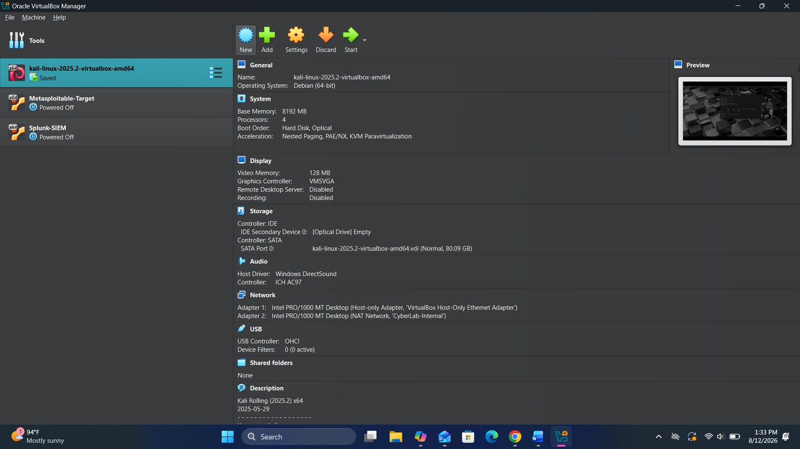
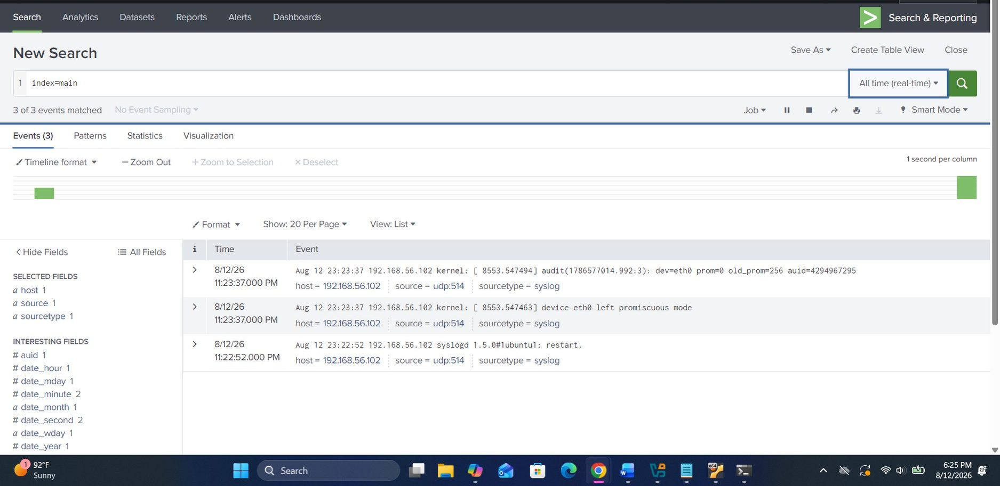
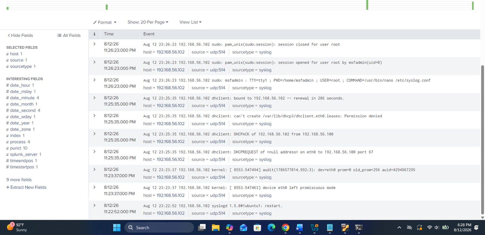
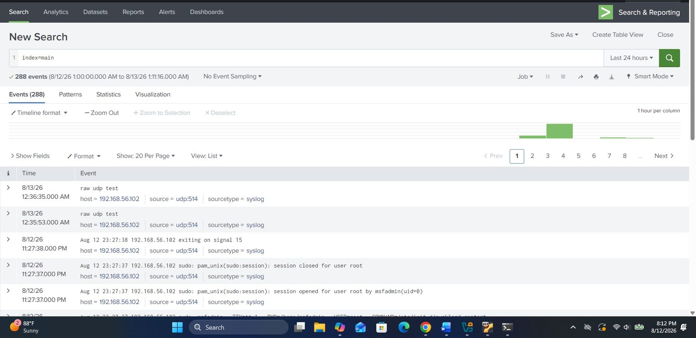

A simulated outpatient clinic environment — a deliberately vulnerable target standing in for a legacy clinic system, a centralized Splunk instance for log monitoring, and a Kali assessment workstation — was reviewed against three control areas central to the HIPAA Security Rule: access control, data handling, and audit logging.
Technically validate control gaps rather than just checklist them, confirm whether the audit-logging capability actually meets the HIPAA requirement rather than just looking configured, and produce a prioritized remediation roadmap tied to specific 45 CFR citations.
Does this environment actually meet HIPAA's technical safeguards, or does it just look configured? Is the audit-logging capability real, or just installed? Which gaps represent an active exploitable risk to ePHI versus a hardening opportunity?
A working Splunk dashboard with events flowing in looked, at a glance, like the audit-control requirement (§164.312(b)) was already satisfied. Reviewing the actual event content — full command-line detail on privileged sudo escalations and correctly attributed failed-login attempts — confirmed the pipeline met the 'who, what, when' standard; what kept the control at Partial rather than fully Compliant was the absence of a defined log-review cadence and alerting rule set, a procedural gap rather than a technical one.
| Type | Indicator | Context |
|---|---|---|
| F-01 | vsftpd 2.3.4 backdoor — confirmed root shell | Critical — §164.312(a)(2)(iv) — CVE-2011-2523 |
| F-02 | UnrealIRCd trojaned backdoor service | Critical — §164.312(a)(1) — port 6667 |
| F-04 | Open, unauthenticated root shell (ingreslock) | Critical — §164.312(a)(1) — port 1524 |
| Audit Control | Splunk syslog pipeline — 288 events indexed | Partial — §164.312(b) — sudo/auth activity captured, no review cadence defined |
Simulated assessment against a deliberately vulnerable lab target — not a review of a real clinic's production systems.




Simulated clinic environment; screenshots cropped to remove unrelated browser tabs from the assessment workstation.
"Is the audit-logging control here actually compliant, or does it just look like it's working?"
Syslog forwarding pipeline configuration, direct log-delivery testing, and the actual content of captured events (sudo escalations, failed logins) reviewed inside Splunk.
A working dashboard with events visibly flowing in looked, at first glance, like the audit-control requirement was already satisfied.
Reviewing the actual event content — full command-line detail on privileged escalations and correctly attributed failed-login attempts — confirmed the pipeline met the specific 'who, what, when' requirement, while the missing review cadence and alerting rules is what kept the control at Partial rather than Compliant.
A functioning pipeline and a compliant control aren't the same thing. Content and process both have to be verified — not just whether data is flowing.